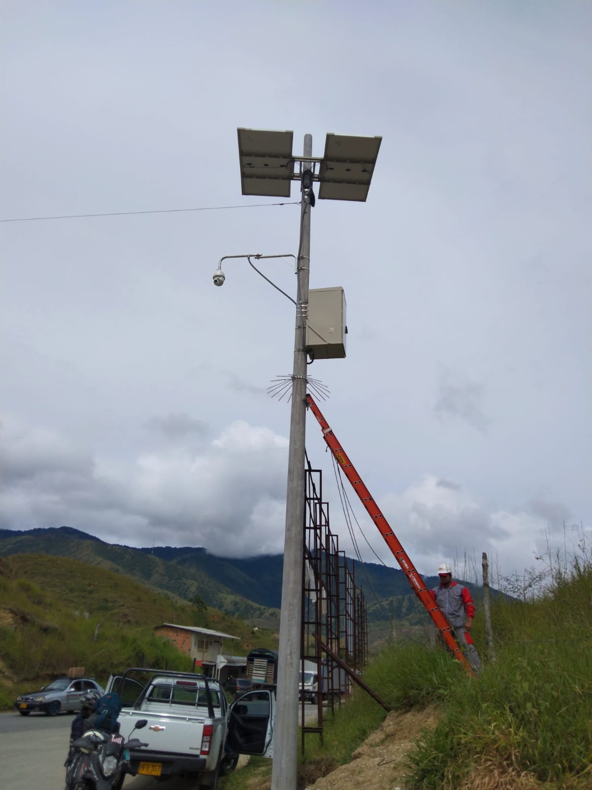
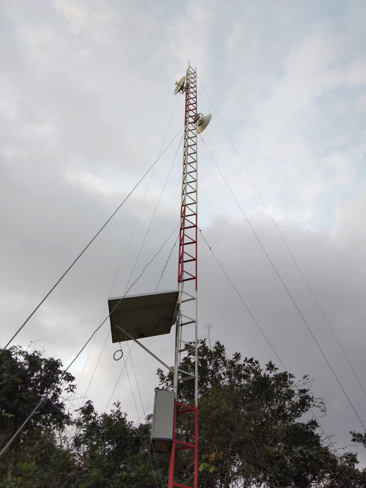
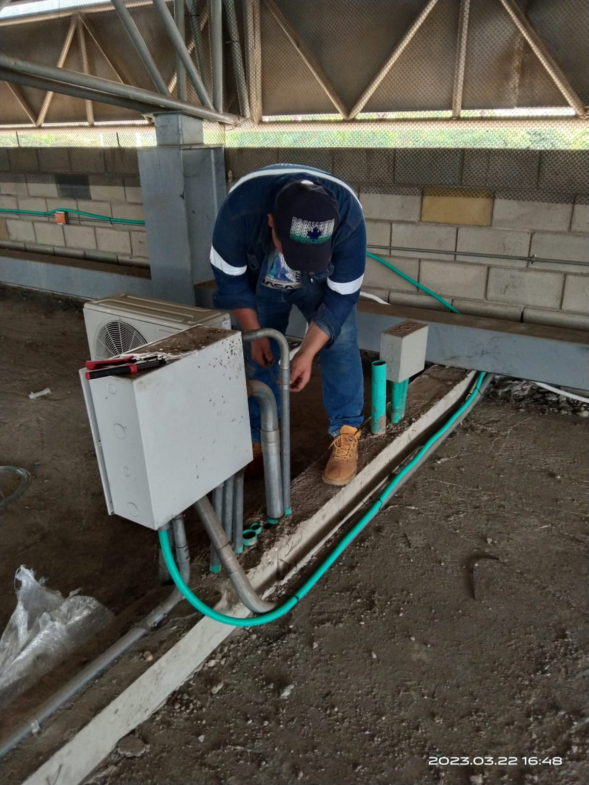
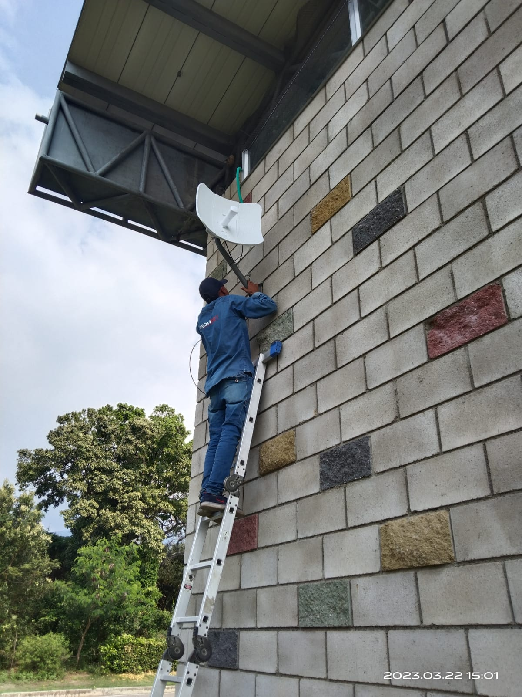

Bienvenidos a nuestra empresa
Solux Comunicaciones es pionero en el pais en telefonia rural e inhalambrica,nuestra empresa se dedica a ofrecer servicios de comunicaciones, como telefonia, internet o soluciones de red, entre otros. Con experiencia de mas de 30 años en los Santanderes y alrededores, especialmente en las zonas rulares
Servicios
- Proveedor ISP Rural (Internet Service Provider)
- Citofonia en Conjuntos y Edificaciones
- Telefonia Rural inhalambrica
- Mantenimiento de Redes
- Servicio y Monitoreo (Camaras de Seguridad)
Quienes somos?
:]
- Bienvenidos a Solux Comunicaciones, su proveedor de soluciones de redes y telecomunicaciones de alta calidad. Ofrecemos una amplia gama de servicios, incluyendo radioenlaces, mantenimiento de redes y sistemas de citofonía, para satisfacer las necesidades de su empresa. Nuestro equipo altamente capacitado y experimentado está comprometido en proporcionar servicios de alta calidad y soluciones personalizadas para cada cliente. Nos enorgullece ofrecer productos y servicios de la más alta calidad a precios competitivos. Si está buscando una empresa confiable y comprometida con la excelencia, ¡no busque más que Solux Comunicaciones!  
- En Solux Comunicaciones, nos comprometemos a proporcionar servicios excepcionales y soluciones personalizadas para satisfacer las necesidades de su empresa y de su hogar. Ya sea que esté buscando mejorar su conectividad, mejorar la seguridad de su red o simplemente necesita un mantenimiento regular de su sistema de comunicación, estamos aquí para ayudarlo.  
- Nuestro equipo de expertos tiene años de experiencia en la industria de redes y telecomunicaciones, lo que nos permite proporcionar soluciones y servicios de la más alta calidad para nuestros clientes. Nos enorgullece mantenernos a la vanguardia de la tecnología para garantizar que nuestros clientes obtengan lo mejor de lo mejor.
- Además de nuestros servicios de radioenlaces, mantenimiento de redes y citofonía, también ofrecemos una amplia variedad de productos y servicios de redes y telecomunicaciones, incluyendo conexiones de alta velocidad, sistemas de seguridad de redes y más.